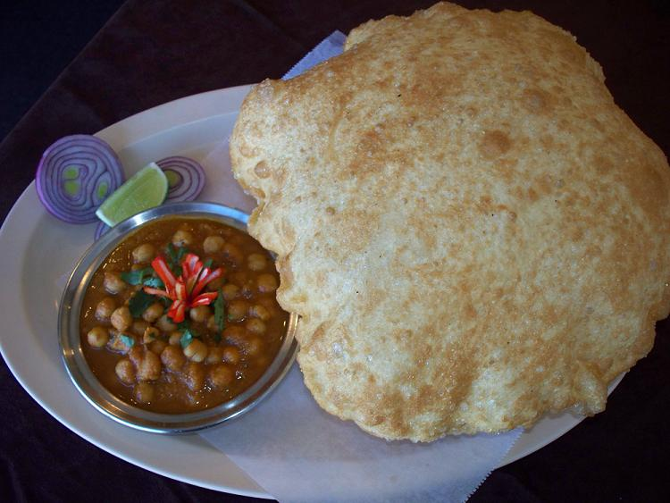

FAMOUS PUNJABI DISHES ARE:-

BHOOKARS RATINGS:-


Tandoori Chicken is a highly popular Indian and South Asian dish consisting of roasted chicken yogurt and spices.The dish is a combination of tandoor specialties like tangari chicken, chicken tikka, etc. The clay oven gives tandoori chicken a nicely smoky aspect which is bound to make your mouth water!
WHERE TO EAT-BAR B QUE (CHANDIGARH)
 CHANA BATURA
CHANA BATURA
BHOOKARS RATINGS:-


Chana bhatura is a combination of chole (spicy chick peas) and fried bread called bhatoora (made of maida flour). It is not only famous in Punjab but in all of India. It is a street food sold by vendors and is commonly eaten for breakfast.
WHERE TO EAT-ANAND PUNJAB(CHANDIGARH)

BHOOKARS RATINGS:-


Makki di roti 'n sarson da saag.. rustic, soulful, nutritious, delicious. It is the world famous Punjabi household staple. The dish is comprised of two components, almost always paired together (a match made in heaven). Makki di roti essentially means corn flat bread and sarson da saagis mustard greens cooked up with traditional herbs and spices. The mustard greens are relatively easy to make but the Makki roti requires a little patience and skill. But trust me, it is worth all the hardwork!
WHERE TO EAT:-SARDAR PALACE (CHANDIGARH)